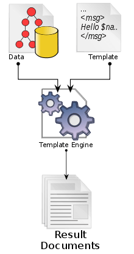

The Django Template System
Created for
Iva E. Popova, 2018-2019:

Overview
Overview
What is a template?
{kind=link}
- A template contains the static parts of the desired HTML output as well as some special syntax describing how dynamic content will be inserted
Why to use a Template System?
- Separation of concerns: HTML/CSS vs Python/Django
- I.e. to to separate the design of the page from the Python code itself
- Easy change of the design of a Web site
- The static part of the view can be implemented by Front-End Developer, while the Back-End Developer can concentrate on the dynamic parts
Create your first Django Template
Create your first Django Template
The template folder and file
- In the ToDoApp folder create the foldeer:
templates/ToDoApp - Inside
ToDoApp/templates/ToDoAppcreate a new file:index.html - You should have the following structure for your App:
ToDoApp/
├── admin.py
├── apps.py
├── __init__.py
├── migrations
│ ├── 0001_initial.py
│ └── __init__.py
├── models.py
├── templates
│ └── ToDoApp
│ └── index.html
├── tests.py
├── urls.py
└── views.py
The Template File
<!DOCTYPE html>
<html>
<head>
<title></title>
</head>
<body>
<h1>Latest tasks</h1>
{% if latest_tasks %}
<ul>
{% for task in latest_tasks %}
<li><a href="/task/{{ task.id }}/">{{ task.title }}</a></li>
{% endfor %}
</ul>
{% else %}
<p>No task left</p>
{% endif %}
</body>
</html>
Set up the view
- In
indexview we need to load the template and return the rendered html page
from django.shortcuts import render
from django.template import loader
from django.http import HttpResponse
from ToDoApp.models import Task
# Create your views here.
def index(request):
latest_tasks = Task.objects.order_by('due')[:5]
context = {
'latest_tasks': latest_tasks,
}
template_file = 'ToDoApp/index.html'
template = loader.get_template(template_file)
return HttpResponse(template.render(context, request))
How Django Template System works
How Django Template System works
- By default, django searches for templates files in
{app_folder}/templatesfolder - In the project's
settings.pyfile we can set up the template engine and the default search path
TEMPLATES settings
TEMPLATES = [
{
'BACKEND': 'django.template.backends.django.DjangoTemplates',
'DIRS': [],
'APP_DIRS': True,
'OPTIONS': {
# ... some options here ...
},
},
]
TEMPLATES settings
- BACKEND - a dotted Python path to a template engine class implementing Django’s template backend API.
- The built-in backends are
- django.template.backends.django.DjangoTemplates
- django.template.backends.jinja2.Jinja2
TEMPLATES settings
- DIRS - defines a list of directories, in search order, where the engine should look for template source files.
- You can use whatever path for your templates, as long as the directories and templates are readable by the Web server.
- Paths should use Unix-style forward slashes, even on Windows.
- Template files can have any extension (.html or .txt), or they can have no extension at all.
- APP_DIRS [True/False] - whether the engine should look for templates inside installed applications.
TEMPLATES settings
- OPTIONS - extra parameters to pass to the template backend.
- Available parameters vary depending on the template backend (DjangoTemplates and Jinja2)
- Reference: Built-in backends @djangoproject.com
Templates Loading - Live Demo
- Lets create another app for our project:
- django-admin startapp DemosApp
- Add it to the INSTALLED_APPS settings
INSTALLED_APPS = [
'ToDoApp',
'DemosApp',
'django.contrib.admin',
...
]
- Note, that the order of listing your apps will reflect the order of default template search path!
Templates Loading - Live Demo
- Create the templates folder for DemosApp, but this time we'll decide to keep it simple and to put our templates files directly inside it.
- Create the urls and views for Demos App for a simple index page
- Create a simple
index.htmltemplate
DemosApp/
...
├── models.py
├── templates
│ └── index.html
├── tests.py
├── urls.py
└── views.py
Templates Loading - Live Demo
from django.shortcuts import render
# Create your views here.
def index(request):
context = {
'title': "Demos App index",
}
template_file = 'index.html'
return render(request, template_file, context)
Templates Loading - Live Demo
<!DOCTYPE html>
<html>
<head>
<title>{{ title }}</title>
</head>
<body>
<h1>{{ title }}</h1>
</body>
</html>
http://127.0.0.1:8000/demos/ should load our DemosApp index view
Templates Loading - Live Demo
- How can we see/debug where exactly Django will search for our templates files?
- Let's raise a "TemplateDoesNotExist" error by setting a non existing template_file in our
DemosApp/views.py
Templates Loading - Live Demo
Template-loader postmortem
Django tried loading these templates, in this order:
Using engine django:
django.template.loaders.app_directories.Loader: .../ToDoProjectContainer/ToDoApp/templates/Index.html (Source does not exist)
django.template.loaders.app_directories.Loader: .../ToDoProjectContainer/DemosApp/templates/Index.html (Source does not exist)
django.template.loaders.app_directories.Loader: .../site-packages/django/contrib/admin/templates/Index.html (Source does not exist)
django.template.loaders.app_directories.Loader: .../site-packages/django/contrib/auth/templates/Index.html (Source does not exist)
- Switch the order of you apps into INSTALLED_APPS project settings
- And expect how the templates search path order will be changed, as well
INSTALLED_APPS = [
'DemosApp',
'ToDoApp',
'django.contrib.admin',
'django.contrib.auth',
'django.contrib.contenttypes',
'django.contrib.sessions',
'django.contrib.messages',
'django.contrib.staticfiles',
]
Django Template Language Syntax
Django Template Language Syntax
Overview
- Django has own template system based on Django Template Language (DTl).
- A template is rendered with a context.
- A dict-like object mapping variables to values.
- Rendering replaces variables with their values, which are looked up in the context, and executes tags.
- Everything else is output as is.
Example
context = {
'title': "Demos App index",
'user_name': 'Ada',
'user_age': 32
}
Hello {{ user_name}}! You're {{user_age}} years old.
Hello Ada! You're 32 years old.
Variables
- Variables are surrounded by {{ and }}
- They are replaced with the respective values from the context
- Dictionary lookup, attribute lookup and list-index lookups are implemented with a dot notation:
context = {
'product_prices': {
'apples': 2.4,
'oranges': 1.80
},
'products_list': ['apples', 'oranges']
}
{{products_list.0}}
{{product_prices.apples}}
Variables
- If a variable resolves to a function, the template system will call it with no arguments and use its result.
def say_hello():
return 'Hello there!'
context = {
'say_hello': say_hello,
}
{{say_hello}}
Hello there!
Tags
- Tags are surrounded by {% and %}
- Tags provide arbitrary logic in the rendering process.
- Django provides a list of built-in tags
- We can define a custom tags, as well.
Tags
context = {
'products_list': ['apples', 'oranges'],
}
{% if products_list %}
{% for product in products_list %}
- {{ product }}
{% endfor %}
{% endif %}
- apples
- oranges
Tags
- More on tags:
- tags @djangoproject.com
- builtins-tags @djangoproject.com https://docs.djangoproject.com/en/2.1/ref/templates/builtins/#built-in-tag-reference
Filters
Filters
Template inheritance
Template inheritance
Overview
- Template inheritance allows you to build a base “skeleton” template that contains all the common elements of your site and defines blocks that child templates can override.
- template-inheritance @djangoproject.com
The base template
<!DOCTYPE html>
<html>
<head>
<title></title>
</head>
<body>
<h1>{{title}}</h1>
{% block content %}
{% endblock %}
</body>
</html>
- We just define the block which will be replaced with the block "content" defined in a child-template, that extends this base template.
The child template
{% extends 'demos/base.html' %}
{% block content %}
{% if latest_tasks %}
<ul>
{% for task in latest_tasks %}
<li><a href="/demos/task{{ task.id }}/">{{ task.title }}</a></li>
{% endfor %}
</ul>
{% else %}
<p>No task left</p>
{% endif %}
{% endblock content %}
{% extends %}tag must be the first template tag in the child template.- A good practice is to give explicit name to endblock tags.
These slides are based on
customised version of
framework